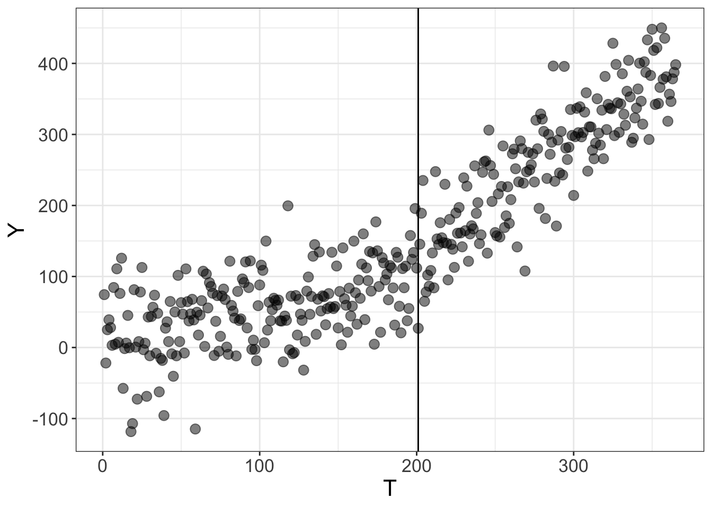
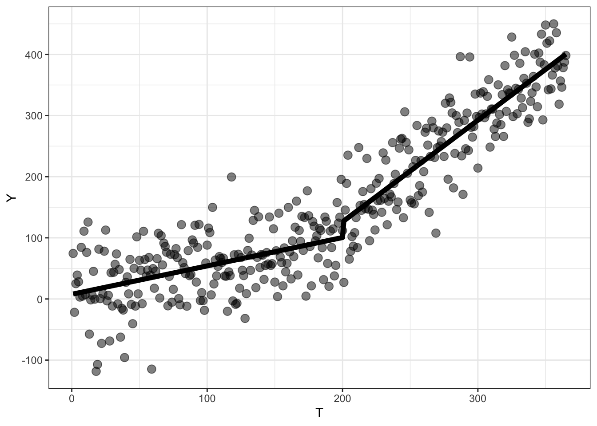
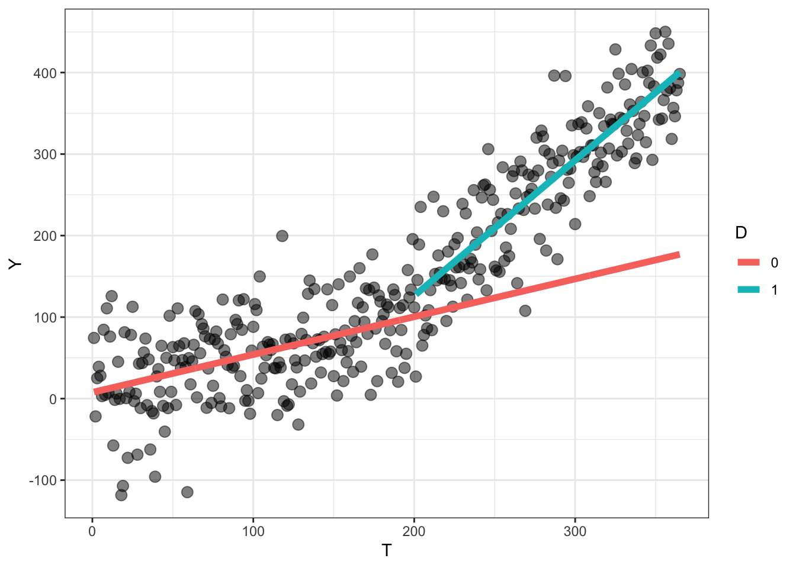
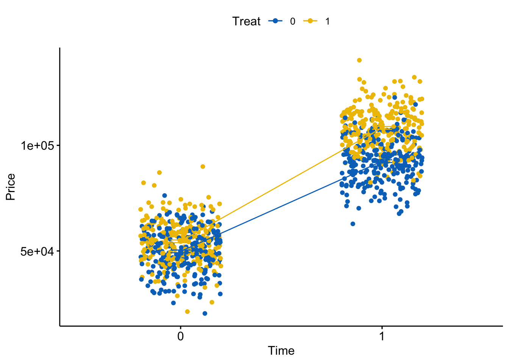

library(tidyverse)
library(ggpubr)
library(ggdag)
library(sjPlot)GEOG 6960 Causality in Geog. Studies 3
Introduction
In this lab, we’re going to explore what a randomized control trial (RCT) looks like, and the use of propensity score matching to replicate the type of randomization seen in RCTs.
As a reminder, the goal of causal inference is to remove any bias related to the treatment: the covariate we are interested in. This is usually expressed as a confounder : one or more additional covariates (\(X\)) that affect both the treatment (\(T\)) and the outcome (\(Y\)). RCTs avoid this problem by trying to ensure that the assignation of \(T\) is random relative to \(X\). If this is true, then the causal effect (the thing we’re actually interested in) can usually be estimated using simple statistics (\(t\)-tests, linear models).
Packages
We’ll be using the following R packages, so make sure they are installed and then load them:
We’ll be using the following Python packages, so install these using your favorite package manage (pip, conda) and import them:
import random
import numpy as np
import pandas as pd
import matplotlib.pyplot as plt
import seaborn as sns
import statsmodels.api as sm
import statsmodels.formula.api as smfInterrupted Time Series
Interrupted time series models assess the causal effect of an intervention or treatment by examining changes in the trend of an outcome (\(Y\)) before and after the start of the treatment. This is quite widely used in social and economic settings, where often only one set of data can be observed (e.g. tracking GDP before and after the implementation of a fiscal policy).
The format for the ITS model is
\[ Y = \beta_0 + \beta_1 T + \beta_2 D + \beta_3 P \]
Where:
- \(Y\) is the outcome
- \(T\) is time
- \(D\) is a binary indicator (pre vs. post treatment)
- \(P\) is a index of time since treatment
Simulated data
First, we’re going to create a synthetic dataset, which will include the impact of a treatment. The time series will include a base trend, which will then be modified after the start of the intervention.
First, we’ll set a random seed to make the results repeatable. As before, try changing this to see how the noise we will add changes the reuslts.
set.seed(42)np.random.seed(42)Now we’ll simulate the data. The data will represent student outcomes over a full year (365 days), and we’ll use the following equation to represent the base trend (\(Y\) is the outcome, \(T\) is the time in days). This will give a starting value of 5.4 and an upward trend of 0.5 per day:
\[ Y = 5.4 + 0.5 \times T \] To this we’ll add the following effects: - An immediate effect of the policy change of +20 points - A change in the slope of +1.2
To include these, we need to make the two vectors (\(D\) and \(P\)). With this, the equation to generate the data is:
\[ Y = 5.4 + 0.5 \times T + 20 \times D + 1.2 \times P \]
Finally, we’ll add some noise to the trends to represent individual daily variation (\(N(0, 50)\)).
First generate the basic equation:
T = rep(1:365)
D = ifelse(T > 200, 1, 0)
P = ifelse(T <= 200, 0, rep(1:200))
Y = 5.4 + 0.5 * T + 20 * D + 1.2 * PNow add errors and combine everything into a data frame:
err = rnorm(365, 0, 50)
Y = Y + err
well_df <- as.data.frame(cbind(Y, T, D, P)) And finally plot it:
ggplot(well_df, aes(x = T, y = Y)) +
geom_point(size = 3, alpha = 0.5) +
geom_vline(xintercept = 201) +
theme_bw() +
theme(text = element_text(size = 16))
np.random.seed(42)A simple model
Before fitting the ITS model, we’ll fit a simple trend model of the outcome over time. In this case, this we’ll just use a simple OLS model.
fit0 <- lm(Y ~ T, well_df)
tab_model(fit0)| Y | |||
| Predictors | Estimates | CI | p |
| (Intercept) | -49.30 | -61.27 – -37.32 | <0.001 |
| T | 1.08 | 1.03 – 1.14 | <0.001 |
| Observations | 365 | ||
| R2 / R2 adjusted | 0.796 / 0.795 | ||
np.random.seed(42)Note that the slope we obtain here falls somewhere between the baseline trend (0.5) and the post-treatment trend (0.5 + 1.2), as we have not accounted for this change.
Now we’ll fit the full ITS model. As a reminder, this extends the basic OLS model by including the two additional vectors described above.
ITS model
fit1 <- lm(Y ~ T + D + P, well_df)
tab_model(fit1)| Y | |||
| Predictors | Estimates | CI | p |
| (Intercept) | 7.64 | -5.73 – 21.02 | 0.262 |
| T | 0.46 | 0.35 – 0.58 | <0.001 |
| D | 25.71 | 5.87 – 45.54 | 0.011 |
| P | 1.20 | 1.01 – 1.39 | <0.001 |
| Observations | 365 | ||
| R2 / R2 adjusted | 0.862 / 0.860 | ||
np.random.seed(42)The values we used when generating the data should now be a lot closer to the model coefficients (or at least within the confidence intervals).
One of the advantages of fitting these models in standard statistical frameworks (like OLS) is that we can use other diagnostics tools. For example, we can use ANOVA to compare the two model, to see if the additional complexity of the ITS model is worthwhile:
anova(fit0, fit1)Analysis of Variance Table
Model 1: Y ~ T
Model 2: Y ~ T + D + P
Res.Df RSS Df Sum of Sq F Pr(>F)
1 363 1222981
2 361 828505 2 394476 85.941 < 2.2e-16 ***
---
Signif. codes: 0 '***' 0.001 '**' 0.01 '*' 0.05 '.' 0.1 ' ' 1np.random.seed(42)Let’s now use this to visualize the model. First create a new data set to predict for, the plot the results:
pred_df <- data.frame(T = T,
D = D,
P = P)
pred_df$yhat <- predict(fit1, newdata = pred_df)
head (pred_df) T D P yhat
1 1 0 0 8.108687
2 2 0 0 8.572678
3 3 0 0 9.036669
4 4 0 0 9.500660
5 5 0 0 9.964650
6 6 0 0 10.428641ggplot(well_df, aes(x = T)) +
geom_point(aes(y = Y), size = 3, alpha = 0.5) +
geom_line(data = pred_df, aes(y = yhat), size = 2) +
theme_bw()Warning: Using `size` aesthetic for lines was deprecated in ggplot2 3.4.0.
ℹ Please use `linewidth` instead.
np.random.seed(42)Counterfactual
We can use the coefficients from the ITS model to calculate the counterfactual for the post-treatment period. The estimation of this is simple - we just set the values of \(D\) and \(P\) to zero (rather than the value we set above). In the following code, we first extract the model coefficients, then use these to estimate the factual and counterfactual for 20 days post-treatment.
b0 = coef(fit1)[1]
b1 = coef(fit1)[2]
b2 = coef(fit1)[3]
b3 = coef(fit1)[4]Factual:
post_time <- 20
b0 + b1 * (200 + post_time) + b2 + b3 * post_time(Intercept)
159.3938 Counterfactual:
post_time <- 20
b0 + b1 * (200 + post_time) (Intercept)
109.7227 np.random.seed(42)We can also predict these across a range of values
pred_df <- data.frame(T = rep(T, 2),
D = c(D, rep(0, length(P))),
P = c(P, rep(0, length(P))))
pred_df$yhat <- predict(fit1, newdata = pred_df)
pred_df$D <- as.factor(pred_df$D)
ggplot(well_df, aes(x = T)) +
geom_point(aes(y = Y), size = 3, alpha = 0.5) +
geom_line(data = pred_df, aes(y = yhat, col = D), size = 2) +
theme_bw() 
np.random.seed(42)Difference-in-differences
Difference-in-difference models are an alternative approach to testing causality with time series data. These improve on the ITS approach by testing for changes in time and comparing these to any change in a control time series.
The base model for DID is:
\[ Y = \beta_0 + \beta_1 T + \beta_2 D + \beta_3 D\times T \]
Where:
- \(Y\) is the outcome
- \(T\) is time
- \(D\) is a binary indicator (control vs. treatment)
- \(D \times T\) is the interaction between \(T\) and \(D\) and represents the quantity we’re interested in (i.e. the change in slope in the treated group)
Simulated data
As before, we’ll start by creating a synthetic dataset. This will represent house prices for two locations. Unlike the previous example, where we had observations for multiple time steps, here we’ll just have value pre (0) and post (1) treatment. The treatment here represents the installation of subsidized housing between the two time steps, and the outcome of interest is house prices.
To start, we create two vectors of of 1000 binary values representing pre and post treatment (i.e. time) and control (0) or treated (1). We then estimate a house price for each of these using the following equation:
\[ Price = 50000 + 5000 \times Treat + 43000 \times Time + 10000 \times Treat \times Time \]
This means that: - Prices for control houses before the treatment are $50K - Prices for treated houses before the treatment are $50K + $5K = $55K - Prices for control houses increase by $43K after the treatment - Prices for treated houses increase by an additional $10K after the treatment
Finally, we’ll add some noise to represent house-scale variability (\(N(0, 10000)\)).
Time = rep(c(0,1), 500)
Treat = rep(c(0,0,1,1), 250)
y = 50000 + 5000 * Treat + 43000 * Time +
10000 * Treat * Time
e = rnorm(1000, 0, 10000)
y = y + e
house_df = data.frame(Price = y,
Treat = as.factor(Treat),
Time = as.factor(Time))ggline(house_df, x = "Time", y = "Price",
add = c("mean_se", "jitter"),
color = "Treat", palette = "jco") 
np.random.seed(42)